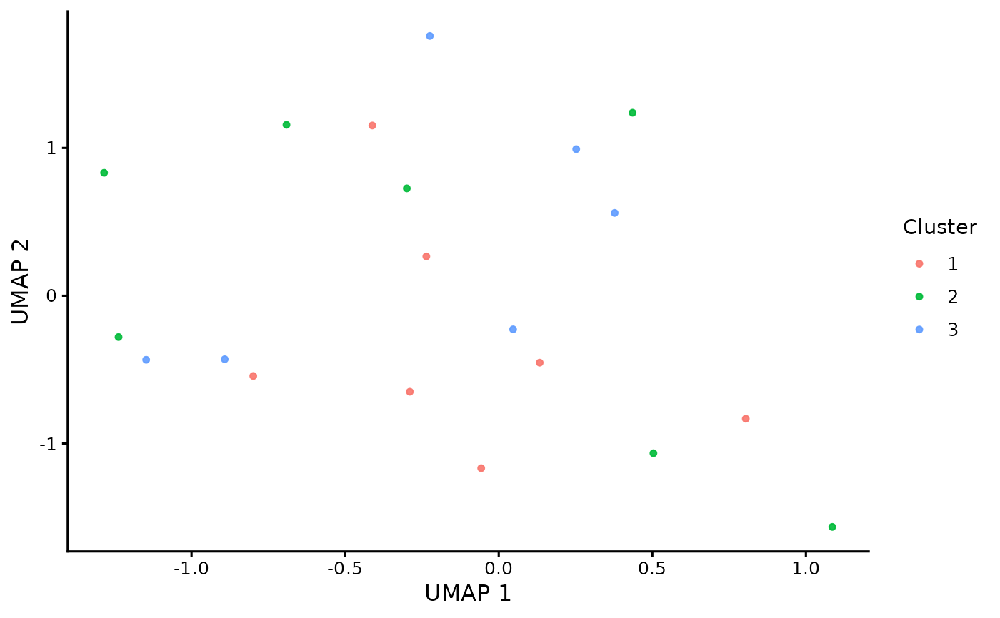

Plot a UMAP embedding colored by gene cluster assignment
Source:R/plot_umap_clusters.R
plot_umap_clusters.RdCreates a publication-ready UMAP scatter plot where each point represents a
gene and points are colored by cluster assignment. The function joins the
UMAP embedding coordinates to cluster_table via gene identifiers and
returns a ggplot2 object suitable for saving with
ggplot2::ggsave() or a graphics device such as svglite.
This function performs plotting only. It does not compute the UMAP embedding
or gene clusters. Input validation is delegated to an internal helper and
errors are emitted via rlang::abort().
Arguments
- cluster_table
Data frame or tibble with one row per gene and at least the columns
geneandcluster. Thegenecolumn must matchrownames(umap_embedding).- umap_embedding
Numeric matrix of UMAP coordinates with genes in rows and embedding dimensions in columns. Must have at least two columns. Row names must be gene identifiers used to join against
cluster_table$gene.- point_size
Numeric scalar giving the point size used in
ggplot2::geom_point(). Must be strictly positive.
Examples
set.seed(1)
genes <- paste0("gene", 1:20)
cluster_table <- tibble::tibble(
gene = genes,
cluster = sample(1:3, length(genes), replace = TRUE)
)
umap_embedding <- matrix(
rnorm(length(genes) * 2),
ncol = 2,
dimnames = list(genes, c("UMAP1", "UMAP2"))
)
p <- plot_umap_clusters(
cluster_table = cluster_table,
umap_embedding = umap_embedding,
point_size = 1.2
)
p
